We conduct a systematic study to investigate whether video generation is able to learn physical laws from videos, leveraging data and model scaling.
Generalization Scenarios: We consider three scenarios: in-distribution, out-of-distribution and combinatorial generalization.
Tasks: We consider physical events governed by one or more classical mechanics laws, e.g., law of inertia, Newton's second law and the conservation of energy.
Data: We develop a 2D simulator with simple geometric shapes (eliminating textures), ensuring unlimited supply of data for scaling.
Model: We use standard video generation model and focus on scaling-up.
Key Messages:
We first summarize the generalization observations of video models,
then analyze their underlying generalization mechanism and priority.
Video generation fails to learn physical laws from video data, even with scaling.
👉What? We study whether video generation model is able to learn and stick to physical laws.
👉Why?
OpenAI’s Sora highlights the potential of video generation for developing world models that adhere to fundamental physical laws,
according to the following quotation:
Scaling video generation models is a promising path towards building general purpose simulators of the physical world.
However, the ability of video generation models to discover such laws purely from visual data without human priors can be questioned.
A world model learning the true law should give predictions robust to nuances and correctly extrapolate on unseen scenarios.
👉How?
Answering such an question is non-trivial as it is hard to tell whether a law has been learned or not.
Evaluation We use three key scenarios: in-distribution, out-of-distribution, and combinatorial generalization.
Tasks We consider physical events governed by one or more classical mechanics laws, e.g., elastic collision.
Data We develop a 2D simulator with simple geometric shapes (eliminating textures), for unlimited supply of data.
Model We use standard video generation model without any specific designs and focus on scaling-up.
👉Key Messages
Generalization observation Perfect in-distribution generalization, failed to generalize in out-of-distribution scenarios, scaling behaviour for combinatorial generalization.
Generalization mechanism The models fail to abstract general physical rules and instead exhibit "case-based" generalization behaviour, i.e., mimicking the closest training example.
Generalization priority When generalizing to new cases, models are observed to prioritize different factors when referencing training data: color > size > velocity > shape.
This is not surprising to me, but I’m glad they did the work to test it. Agents need more inductive bias - eg common sense core from Spelke - , and active data collection from diverse embodied environments to test their causal theories ie. beyond pixel prediction . https://t.co/ovZhzDQpay
Really happy to see this study! Always wanted to do something like this myself, if only to support calming words to grad students: current-gen generative models have nothing to do with intelligence, and AI research remains fascinating and unsolved! https://t.co/D4FI2Wi60P
Interesting addition to the discussion over whether AI video models are world models.
But even if that topic doesn’t interest you, this “video abstract” is one of the best examples of summarizing a paper for social media I have seen. https://t.co/BWdXHk5s9Q
While video models can generate stunning visuals, lots more work is needed to really make them effective world models.
Problems like object persistence, compositionality, action following and accurate physics are all current issues with current models. https://t.co/Iq0XRcnvIn
We aim to establish the framework and define the concept of physical laws discovery in the context of video generation.
In classical physics, laws are articulated through mathematical equations that predict future state and dynamics from initial conditions.
In the realm of video-based observations, each frame represents a moment in time, and the prediction of physical laws corresponds to
generating future frames conditioned on past states.
Consider a physical procedure which involves several latent variables $\boldsymbol{z}=(z_1,z_2,\ldots,z_k) \in \mathcal{Z} \subseteq \mathbb{R}^k$,
each standing for a certain physical parameter such as velocity or position. By classical mechanics, these latent variables will evolve by differential
equation $\dot{\boldsymbol{z}}=F(\boldsymbol{z})$. In discrete version, if time gap between two consecutive frames is $\delta$, then we have
$\boldsymbol{z}_{t+1} \approx \boldsymbol{z}_{t} + \delta F(\boldsymbol{z}_t)$. Denote rendering function as
$R(\cdot): \mathcal{Z}\mapsto \mathbb{R}^{3\times H \times W}$ which render the state of the world into an image of shape $H\times W$ with RGB channels.
Consider a video \( V = \{I_1, I_2, \ldots, I_L\} \) consisting of \( L \) frames that follows the classical mechanics dynamics. The physical coherence
requires that there exists a series of latent variables which satisfy following requirements:
$$ \boldsymbol{z}_{t+1} = \boldsymbol{z}_{t} + \delta F(\boldsymbol{z}_t), t=1,\ldots,L-1. $$
$$ I_t = R(\boldsymbol{z}_t), \quad t=1,\ldots, L. $$
We train a video generation model \( p \) parametried by \( \theta \), where \( p_{\theta}(I_1, I_2, \ldots, I_L )\) characterizes its understanding of
video frames. We can predict the subsequent frames by sampling from \( p_{\theta}(I_{c+1}', \ldots I_L' \mid I_1, \ldots, I_c) \) based on initial frames'
condition. The variable $c$ usually takes the value of 1 or 3 depends on tasks. Therefore, physical-coherence loss can be simply defined as
$-\log p_{\theta}(I_{c+1}, \ldots, I_L \mid I_1, \ldots, I_c) $. It measures how likely the predicted value will cater to the real world development.
The model must understand the underlying physical process to accurately forecast subsequent frames, which we can quantatively evaluate whether video
generation model correctly discover and simulate the physical laws.
On the Verification of Learned Laws
Suppose we have a video generation model learned based on the above formulation. How do we determine if the underlying physical law has been discovered?
A well-established law describes the behaviour of the natural world, e.g., how objects move and interact. Therefore, a video model incorporating
true physical laws should be able to withstand experimental verification, producing reasonable predictions under any circumstances, which demonstrates
the model's generalization ability. To comprehensively evaluate this, we consider the following categorization of generalization
(see Figure 1) within the scope of this paper:
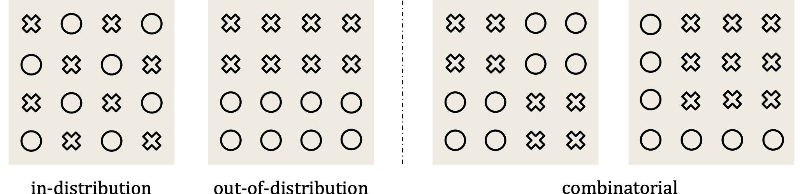
Figure 1: Categorization of generalization patterns. ◯ denotes training data. ✕ denotes testing data.
In-Distribution (ID) generalization: It describes the setting where training data and testing data are from the same distribution.
In our case, both training and testing data follow the same law and are located in the same domain.
Out-of-Distribution (OOD) generalization: A human who has learned a physical law can easily extrapolate to scenarios that have never been observed before.
This ability is referred to as out-of-distribution generalization. Although it sounds challenging, this evaluation is necessary as it indicates whether a model can learn principled rules from data.
Combinatorial generalization: There is a situation between ID and OOD, which has more practical value. We call this combinatorial generalization,
representing scenarios where every "concept" or object has been observed during training, but not their every combination. It examines a model's ability to effectively
combine relevant information from past experiences in novel ways. A similar concept has been explored in LLMs, which demonstrated that models
can excel at linguistic instructing tasks by recombining previously learned components, without task-specific experience.
In-Distribution and Out-of-Distribution Generalization
We focus on deterministic tasks governed by basic kinematic equations, as they allow clear definitions of ID/OOD and straightforward quantitative error evaluation.
Fundamental Physical Scenarios
Figure 2: Video visualization. From left to right: uniform linear motion, perfectly elastic collision and parabolic motion.
Uniform Linear Motion: A ball moves horizontally with a constant velocity. This is used to illustrate the law of Intertia.
Perfectly Elastic Collision: Two balls with different sizes and speeds move horizontally toward each other and collide. The underlying physical law is
the conservation of energy and momentum.
Parabolic Motion: A ball with a initial horizontal velocity falls due to gravity. This represents Newton's second law of motion. Each motion is determined by its initial frames.
Results of Scaling the Data and Model
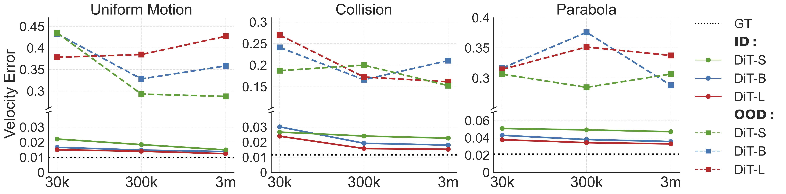
Figure 3: The error in the velocity of balls between the ground truth state in the simulator and the values parsed
from the generated video by the diffusion model, given the first 3 frames
In-Distribution (ID) Generalization. As in Figure 3, increasing the model size (DiT-S to DiT-L) or the data amount (30K to 3M) consistently
decreases the velocity error across all three tasks, strongly evidencing the importance of scaling for ID generalization.
Take the uniform motion task as an example: the DiT-S model has a velocity error of $0.022$ with 30K data, while DiT-L achieves an error of $0.012$ with 3M data,
very close to the error of $0.010$ obtained with ground truth video.
Out-of-Distribution (OOD) Generalization. The results differ significantly.
First, OOD velocity errors are an order of magnitude higher than ID errors in all settings.
For example, the OOD error for the DiT-L model on uniform motion with 3M data is $0.427$, while the ID error is just $0.012$.
Second, scaling up the training data and model size has little or negative impact on reducing this prediction error.
The variation in velocity error is higly random as data or model size changes, e.g.,, the error for DiT-B on uniform
motion is $0.433$, $0.328$ and $0.358$, with data amounts of 30K, 300K and 3M.
We also trained DiT-XL on the uniform motion 3M dataset but observed no improvement in OOD generalization. As a result, we
did not pursue training of DiT-XL on other scenarios or datasets constrained by resources.
These findings suggest the inability of scaling to perform reasoning in OOD scenarios. The sharp difference between ID and OOD
settings further motivates us to study the generalization mechanism of video generation in Section 4.1.
Examples
Figure 4: Generated example videos. The first row the is ground-truth video, while the second row is generated by our model.
Left: successful cases from ID generalization. Right: failure cases from OOD generalization.
Combinatorial Generalization
It is understandable that video generation models failed to reason in OOD scenarios, since it is very difficult for humans
to derive precise physical laws from data.
For example, it took scientists centuries to formulate Newton's three laws of motion.
However, even a child can intuitively predict outcomes in everyday situations by combining elements from past experiences.
In this section, we evaluate the combinatorial generalization abilities of diffusion-based video models.
Combinatorial Physical Scenarios
Figure 5: Downsampled video visualization. The arrow indicates the progression of time.
Environment and task We selected the PHYRE simulator as our testbed—a 2D environment involves
multiple objects to free fall then collide with each other, forming complex physical interactions.
It features diverse object types, including balls, jars, bars, and walls, which can be either fixed or dynamic.
This enables complex interactions such as collisions, parabolic trajectories, rotations, and friction to occur simultaneously within a video.
Despite this complexity, the underlying physical laws are deterministic, allowing the model to learn the laws and predict unseen scenarios.
Data There are eight types of objects considered, including two dynamic gray balls, a group of fixed black balls, a fixed black bar, a dynamic bar, a group of dynamic standing bars, a dynamic jar, and a dynamic standing stick.
Each task contains one red ball and four randomly chonsen objects from the eight types, resulting in \( C^4_8 = 70 \) unique templates. See Figure 5 for examples.
For each training template, we reserve a small set of videos to create the in-template evaluation set. Additionally, 10 unused templates are reserved for the out-of-template evaluation set to assess the model’s ability to generalize to new combinations not seen during training.
Model Given the complexity of the task, we adopt the 256$\times$256 resolution and train the model for more iterations (1 million steps).
Consequently, we are unable to conduct a comprehensive sweep of all data and model size combinations as before. Therefore, we mainly focus on the largest model,
DiT-XL, to study data scaling behaviour for combinatorial generalization.
Results of Scaling the Data and Model
Model
#Template
FVD(↓)
SSIM(↑)
PSNR(↑)
LPIPS(↓)
Abnormal Ratio(↓)
DiT-XL
6
18.2 / 22.1
0.973 / 0.943
32.8 / 25.5
0.028 / 0.082
3% / 67%
DiT-XL
30
19.5 / 19.7
0.973 / 0.950
32.7 / 27.1
0.028 / 0.065
3% / 18%
DiT-XL
60
17.6 / 18.7
0.972 / 0.951
32.4 / 27.3
0.035 / 0.062
2% / 10%
Table 1: Combinatorial generalization results. The results are presented in the format of {in-template result} / {out-of-template result}.
As shown in Table 1, when the number of templates increases from 6 to 60, all metrics improve on the out-of-template testing sets.
Notably, the abnormal rate for human evaluation significantly reduces from 67% to 10%. Conversely, the model trained with
6 templates achieves the best SSIM, PSNR, and LPIPS scores on the in-template testing set. This can be explained by the
fact that each training example in the 6-template set is exposed ten times more frequently than those in the 60-template set,
allowing it to better fit the in-template tasks associated with template 6.
Furthermore, we conducted an additional experiment using a DiT-B model on the full 60 templates to verify the importance of model scaling.
As expected, the abnormal rate increases to 24%. These results suggest that both model capacity and coverage of the combination space are
crucial for combinatorial generalization. This insight implies that scaling laws for video generation should focus on increasing combination diversity,
rather than merely scaling up data volume.
Examples
Figure 6: Generated sample videos. First row: ground gruth. Second Row: the model learned with 60 templates.
Thrid row: the model learned with 30 templates. Forth row: the model learned with 6 templates.
Analysis on The Generalization Behaviour
Understanding Generalization from Interpolation and Extrapolation
The generalization ability of a model roots from its interpolation and extrapolation capability.
Therefore, we design experiments to explore the limits of these abilities for a video generation model.
Experimental Design We design datasets which delibrately leave out some latent values, i.e. velocity. After training, we test model's
prediction on both seen and unseen scenarios. We mainly focus on uniform motion and collision processes. For uniform motion,
we create a series of training sets, where a certain range of velocity is absent. For collsion, it has multiple variables.
we exclude one or more square regions from the training set of initial velocities for two balls and then assess the velocity prediction error after the collision.
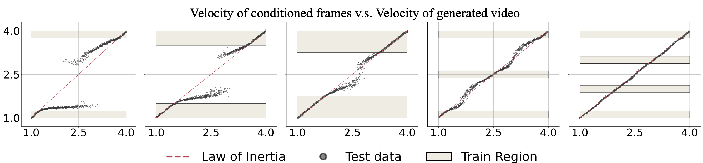
Figure 7: Uniform motion video generation. Models are trained on datasets with a missing middle velocity range.
For example, in the first figure, training velocities cover \( [1.0, 1.25] \) and \( [3.75, 4.0] \), excluding the middle range.
When evaluated with velocity condition from the missing range \( [1.25, 3.75] \), the generated velocity tends to shift away from the initial condition, breaking the Law of Inertia.
Uniform Motion
As shown in Figure 7, the OOD accuracy is closely related to the size of gap.
The larger the gap, the larger the OOD error ((1)-(3)). When the gap is reduced, the model correctly interpolates for most of OOD data.
Moreover, when part the missing range is reintroduced, the model exhibits strong interpolation abilities ((4)-(5)).
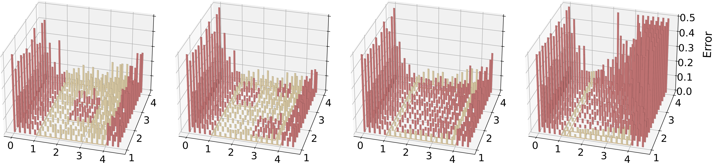
Figure 8: Collision video generation. Models are trained on the yellow region and evaluated on data points in both the yellow (ID) and red (OOD) regions. When the OOD range is surrounded by the training region, the OOD generalization error remains relatively small and comparable to the ID error.
Collision
As shown in Figure 8,
for the OOD velocity combinations that lie within the convex hull of the training set, i.e., the internal red squares in the yellow region,
the model generalizes well, even when the hole is very large ((3)). However, the model experiences large errors when the latent values lies in exterior space of training set's convex hull.
Previous work indicates that LLMs rely on memorization, reproducing training cases during inference instead of
learning the underlying rules for tasks like addition arithmetic. We investigate whether video generation models display similar behaviour, memorizing data rather than understanding physical laws.
Experimental Design
We train our model on uniform motion videos with velocities \(v \in [2.5, 4.0]\), using the first three frames as input conditions.
Two training sets are used: Set-1 only contains balls moving from left to right, while Set-2 includes movement in
both direction, by using horizontal flipping at training time.
At evaluation, we focus on low-speed balls ($v\in[1.0, 2.5]$), which were not present in the training data.
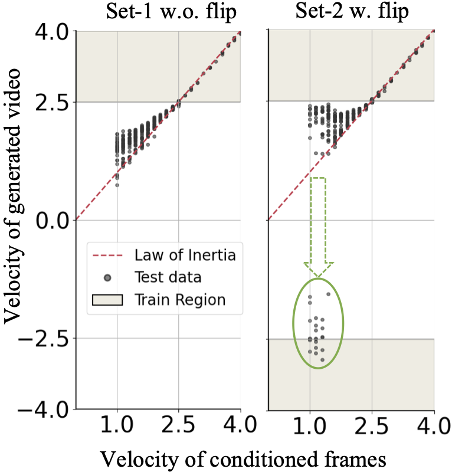
Figure 9: The example of uniform motion illustrating memorization.
Results
As shown in Figure 9, the Set-1 model generates videos with only positive velocities,
biased toward the high-speed range. In contrast, the Set-2 model occasionally produces videos with negative velocities,
as highlighted by the green circle. For instance, a low-speed ball moving from left to right may suddenly reverse direction after
its condition frames. This could occur since the model identifies reversed training videos as the closest match for low-speed balls.
This distinction between the two models suggests that the video generation model is influenced by “deceptive” examples in the
training data. Rather than abstracting universal rules, the model appears to rely on memorization, and case-based imitation for OOD
generalization.
Examples
Figure 10: Generated example videos. The first row the is ground-truth video, while the second row is generated by our model.
A low-velocity ball might reverse it direction right after its initial frames.
How Does Diffusion Model Retrieve Data?
We aim to investigate the ways a video model performs case matching—identifying close training examples for a given input.
Experimental Design We use uniform linear motion for this study.
Specifically, we compare four attributes, i.e., color, shape, size, and velocity, in a pairwise manner.
In other words, we build an
Through comparisons, we seek to determine the model's preference for relying on specific attributes in case matching.
Every attribute has two disjoint sets of values. For each pair of attributes, there are four types of combinations.
We use two combinations for training and the remaining two for testing.
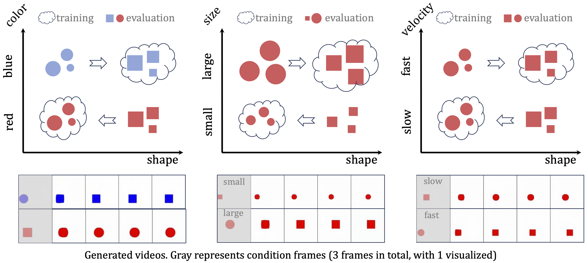
Figure 11: Uniform motion. (1) Color v.s. shape, (2) Size v.s. shape, (3) Velocity v.s. shape.
The arrow $\Rightarrow$ signifies that the generated videos shift from their specified conditions to resemble similar training cases. For example, in the first figure, the model is trained on videos of blue balls and red squares. When conditioned with a blue ball, as shown in the bottom, it transforms into a blue square, i.e., mimicking the training case by color.
Figure 12: Generated example videos. The first row the is ground-truth video, while the second row is generated by our model.
Observation 1 We first compare color, size and velocity against shape. For example, in Figure 11 (1),
videos of red balls and blue squares with the same range of size and velocity are used for training.
At test time, a blue ball changes shape into a square immediately after the condition frames, while a red square transforms into a ball.
Similar observations can be made for the other two settings. This suggests that diffusion-based video models inherently favor other attributes over shape,
which may explain why current open-set video generation models usually struggle with shape preservation.
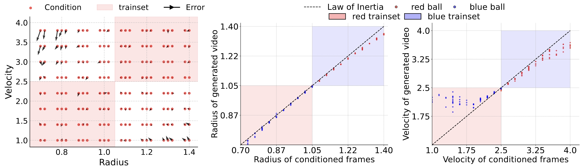
Figure 13: Uniform motion.
(1) Velocity v.s. size: The arrow $\rightarrow$ indicates the direction of generated videos shifting from their initial conditions.
(2) Color v.s. size: Models are trained with small red balls and large blue balls, and evaluated on reversed color-size pair conditions. All generated videos retain the initial color but show slight size shifts from the original.
(3) Color v.s. velocity: Models are trained with low-speed red balls and high-speed blue balls, and evaluated on reversed color-velocity pair conditions. All generated videos retain the initial color but show large velocity shifts from the original.
Observation 2 The other three pairs are presented in Figure 13.
For velocity v.s. size, the combinatorial generalization performance is surprisingly good.
The model effectively maintains the initial size and velocity for most test cases beyond the training distribution.
However, a slight preference for size over velocity is noted, particularly with extreme radius and velocity values
(top left and bottom right in subfigure (1)).
In subfigure (2), color can be combined with size most of the time.
Conversely, for color v.s. velocity in subfigure (3), high-speed blue balls and low-speed red balls are used for training.
At test time, low-speed blue balls appear much faster than their conditioned velocity. No ball in the testing set changes its color,
indicating that color is prioritized over velocity.
Conclusion Based on the above analysis, we conclude that prioritization order is as
follows: color > size > velocity > shape.
How Does Complex Combinatorial Generalization Happen?
What kind of data can actually enable conceptually-combinable video generation? We try to answer this question by
indentifing three foundamental combinatorial patterns through experimental design.
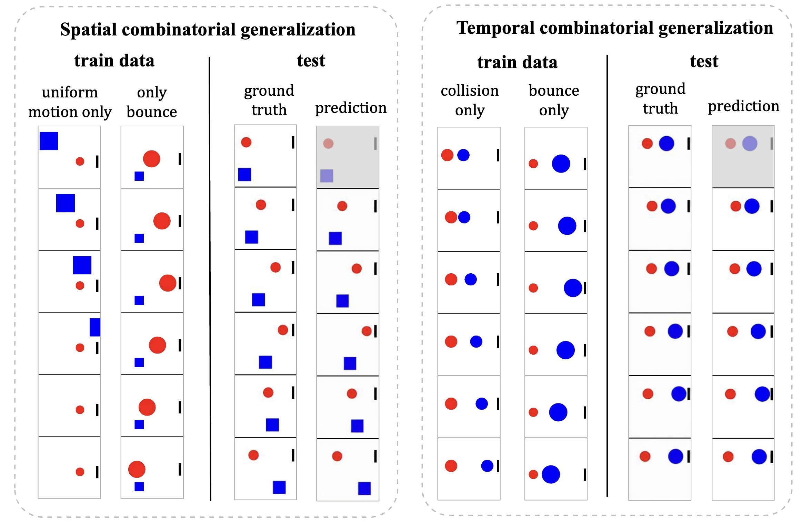
Figure 14: Spatial and temporal combinatorial generalization. The two subsets of the training set contain disjoint physical events. However, the trained model can combine these two types of events across spatial and temporal dimensions.
Attribute composition As shown in Figure 9 (1)-(2),
certain attribute pairs—such as velocity and size, or color and size—exhibit some degree of combinatorial generalization.
Spatial composition
As given by Figure 14 (left side), the training data contains two distinct types of physical events.
One type involves a blue square moving horizontally with a constant velocity while a red ball remains stationary.
In contrast, the other type depicts a red ball moving toward and then bouncing off a wall while the blue square remains stationary.
At test time, when the red ball and the blue square are moving simultaneously, the learned model is able to generate the scenario ]
where the red ball bounces off the wall while the blue square continues its uniform motion.
Temporal composition
As illustrated on the right side of Figure 14 , when the training data includes distinct physical
events—half featuring two balls colliding without bouncing and the other half showing a red ball bouncing off a wall—the model learns to combine
these events temporally. Consequently, during evaluation, when the balls collide near the wall, the model accurately predicts the collision and
then determines that the blue ball will rebound off the wall with unchanged velocity.
Is Video Sufficient for Complete Physics Modeling?
For a video generation model to function as a world model, the visual representation must provide sufficient information for complete physics modeling.
In our experiments, we found that visual ambiguity leads to significant inaccuracies in fine-grained physics modeling.
For example, in Figure 16 , it is difficult to determine if a ball can pass through a gap based on vision alone when the size difference is at the pixel level, leading to visually plausible but incorrect results. Similarly, visual ambiguity in a ball’s horizontal position relative to a block can result in different outcomes.
These findings suggest that relying solely on visual representations, may be inadequate for accurate physics modeling.
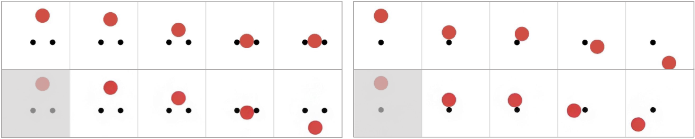
Figure 16: First row: Ground truth; second row: generated video.
Ambiguities in visual representation result in inaccuracies in fine-grained physics modeling.
Figure 17: Generated example videos for visual ambiguity. The first row the is ground-truth video, while the second row is generated by our model.
Open Discussion
Can Language or Numerical Internal States be Helpful in Physical Law Discovery?
Experimental Setup We experimented with collision scenarios and DiT-B models, adding two variants: one conditioned on vision and numerics, and the other on vision and text.
For numeric conditioning, we map the state vectors to embeddings and add the layer-wise features to video tokens.
For text, we converted initial physical states into natural language descriptions, obtained text embeddings using a T5 encoder,
and then add a cross-attention layer to aggregate textual representations for video tokens.
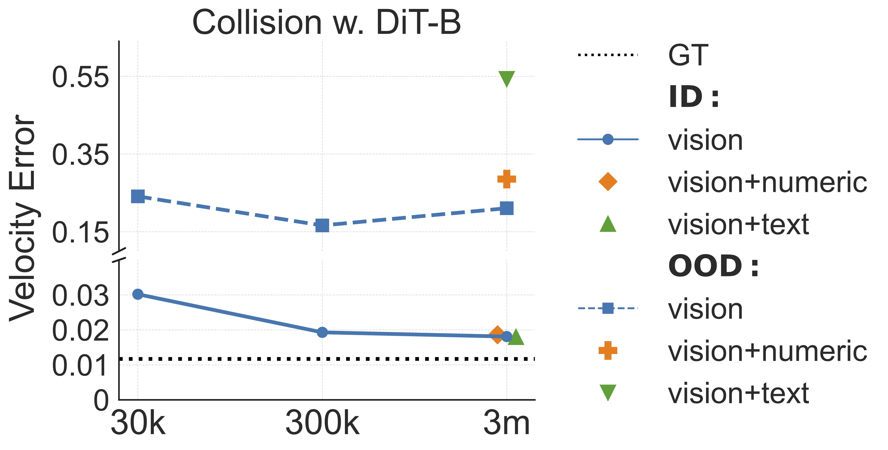
Figure 18: First row: Ground truth; second row: generated video.
Ambiguities in visual representation result in inaccuracies in fine-grained physics modeling.
Results
As shown in Figure 18, for in-distribution generalization, adding numeric and text conditions resulted in
prediction errors comparable to using vision alone. However, in OOD scenarios, the vision-plus-numerics condition exhibited slightly higher errors,
while the vision-plus-language condition showed significantly higher errors.
This suggests that visual frames already contain sufficient information for accurate predictions, and probobaly the best modality for generalization.
However, the text knowledge in our setting is limited to the problem setting. Instead, large language models are often trained with large-scale corpus
containing nearly all knowledge in human history. We'd like to triger a discussion on whether this kind of knowledge can be used to make the physical law discovery
problem feasible.
Can the Generalization Preference be Harnessed or Not?
Our hypothesis on why the preference exists
Since the diffusion model is trained by minimizing the loss associated with predicting VAE latent, we hypothesize that the prioritization may be related to the distance in VAE latent space (though we use pixel space here for clearer illustration) between the test conditions and the training set.
Intuitively, when comparing color and shape as in Figure 11 (1), a shape change from a ball to a rectangle results in minor pixel variation, primarily at the corners. In contrast, a color change from blue to red causes a more significant pixel difference. Thus, the model tends to preserve color while allowing shape to vary.
From the perspective of pixel variation, the prioritization of color > size > velocity > shape can be explained by the extent of pixel change associated with each attribute.
Changes in color typically result in large pixel variations because it affects nearly every pixel across its surface. In contrast, changes in size modify the number of pixels but do not drastically alter the individual pixels' values. Velocity affects pixel positions over time, leading to moderate variation as the object shifts, while shape changes often involve only localized pixel adjustments, such as at edges or corners. Therefore, the model prioritizes color because it causes the most significant pixel changes, while shape changes are less impactful in terms of pixel variation.
Experimental Setup
To further validate this hypothesis, we designed a variant experiment comparing color and shape, as shown in Figure 19. In this case, we use a blue ball and a red ring.
For the ring to transform into the ball without changing color, it would need to remove the ring's external color, turning it into blank space, and then fill the internal blank space with the ball's color, resulting in significant pixel variation.
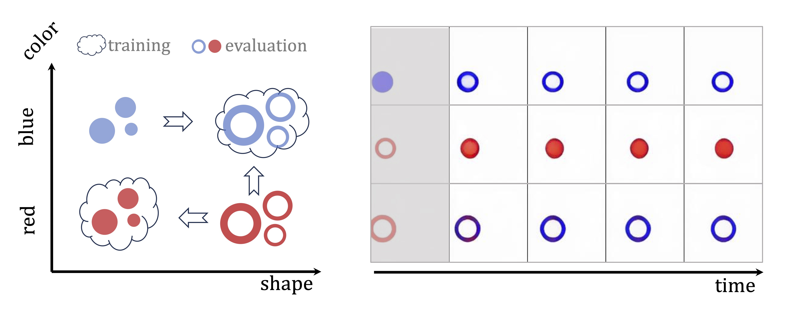
Figure 19: First row: Ground truth; second row: generated video.
Ambiguities in visual representation result in inaccuracies in fine-grained physics modeling.
Results
Interestingly, in this scenario, unlike the previous experiments shown in Figure 11 (1), the prioritization of color > shape does not hold. The red ring can transform into either a red ball or a blue ring, as demonstrated by the examples.
This observation suggests that the model's prioritization may indeed depend on the complexity of the pixel transformations required for each attribute change. Future work could explore more precise measurements of these variations in pixel or VAE latent space to better understand the model's training data retrieval process.
Additional Ssamples
Combinatorial Generalization Examples
More examples
Figure 20: Generated sample videos. First row: ground gruth. Second Row: the model learned with 60 templates.
Thrid row: the model learned with 30 templates. Forth row: the model learned with 6 templates.
Three Types of Generated Videos.
We observe three types of generated videos in terms of how accruate the physical event is. Type 1: The generated videos are
visually similar or identical to the ground-truth video from physical simulation. Type 2: The generated videos are different from
ground-truth videos but human eyes feel it is reasonable (not breaking any physical laws). Type 3: A person can easily tell the video is wrong.
Figure 21: Type 1 examples.
Figure 22: Type 2 examples.
Figure 23: Type 3 examples.
BibTeX
@article{kang2024how,
title={How Far is Video Generation from World Model? -- A Physical Law Perspective},
author={Kang, Bingyi and Yue, Yang and Lu, Rui and Lin, Zhijie and Zhao, Yang, and Wang, Kaixin and Huang, Gao and Feng, Jiashi},
journal={arXiv preprint arXiv:2411.02385},
year={2024}
}